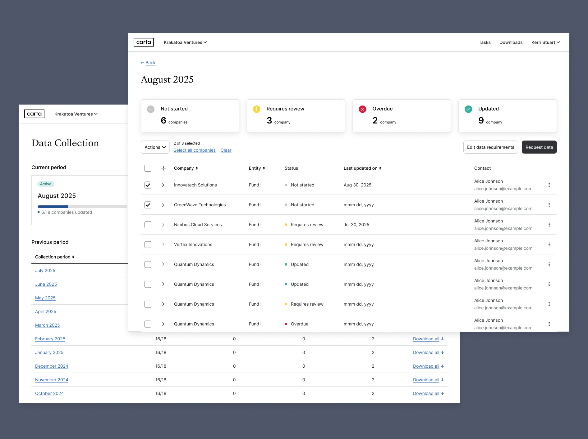
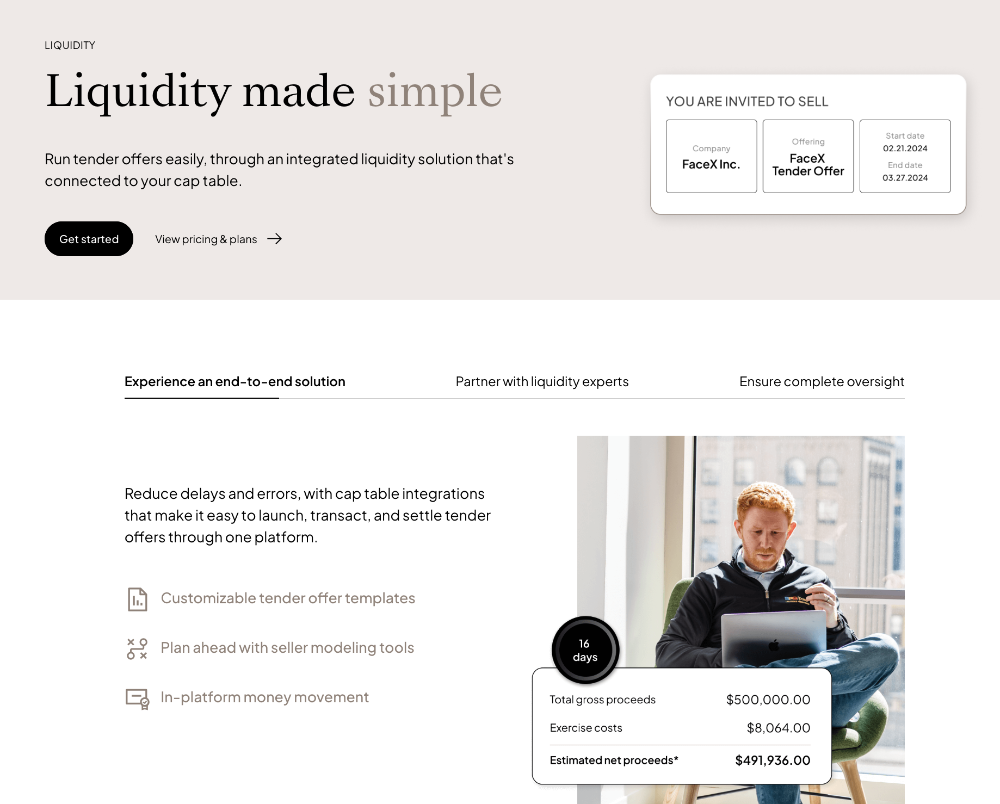
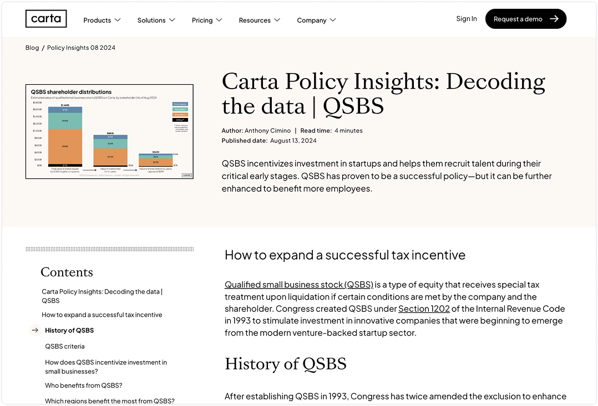
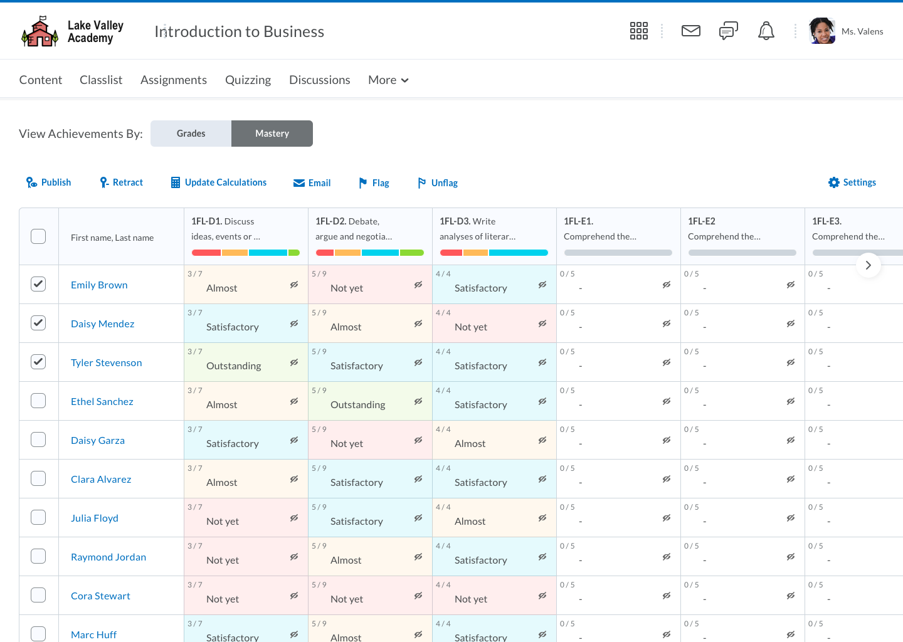
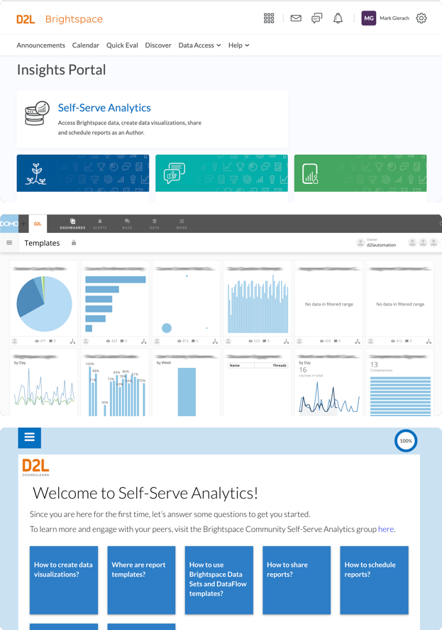

Empirical
Intuition
A first-principles designer translating the complexity of regulated industries and human motivations into intuitive experiences and business outcomes
Projects
AI-empowered Data Collection
Repositioned Data Collection as a core pillar of Carta's Private Capital ERP by designing for multi-cadence flexibility, self-serve scalability, and multi-source data ingestion. Led solo design across UX strategy, IA exploration, status modeling, single-page configuration, and firm/responder workflows. Set design foundation for AI-driven automated extraction and reconciliation with human-in-the-loop.
View Case Study

Reimagine Tender Offer
Conceptualized and delivered a scalable experience that provides real-time visibility into tender offers, reduces manual operational overhead, and establishes a foundation for self-serve, product-led liquidity workflows.
View Case StudyFinancials for QSBS
Crafted a structured, scalable intake experience that drove a 55% increase in deliveries, reduced the backlog by 70%, and cut average time to delivery by 75%.
View Case Study

Mastery Gradebook
Led the end to end design of a centralized assessment dashboard that transformed fragmented grading data into a visual mastery map, enabling educators to identify learning gaps in real-time. This redesign streamlined the feedback loop for millions of users, driving deeper engagement with personalized learning paths.
View Case StudySelf-serve Analytics
Led the design of a visual reporting builder that empowers educators to build custom reports without needing the technical expertise to query fragmented LMS data. This initiative transformed complex raw datasets into a user-friendly 'drag-and-drop' interface, significantly lowering the barrier for data-driven decision-making across K-12 and Higher Ed institutions.
View Case Study
About Me

I didn’t take the traditional path to design. My journey began in scientific research, where I learned that true innovation requires both rigorous data and deep empathy. Today, I use that analytical foundation to "meet people where they are," translating high-complexity problems into simple, empowering experiences.
I thrive in the weeds of complex workflows and technical constraints. Whether I’m designing for EdTech or other regulated spaces, I look past the surface to see the broader system, ensuring every design choice serves both the user’s motivation and the business’s bottom line.
Beyond the screen, I believe my role is to act as a bridge. I advocate for the user while driving toward measurable outcomes, helping cross-functional teams unlock new ways of thinking and solving problems together.